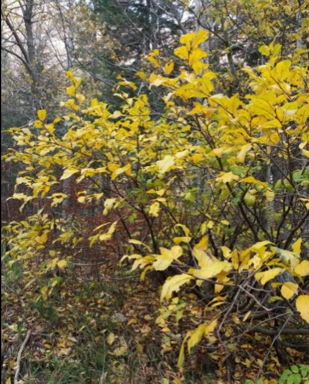
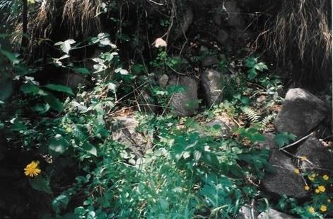
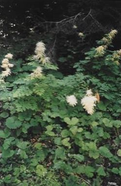
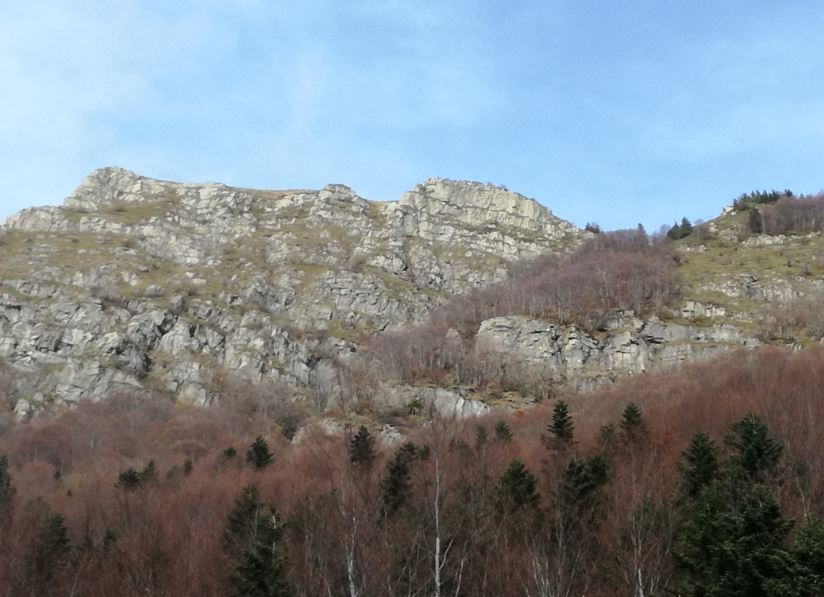

Ramnus Alpinus
E' un genere di pianta della famiglia Rhamnacee . Questa pianta si può trovare sotto forma di cespugli o piccoli alberi alti fino a 4 metri; questa specie, diversamente da altre dello stesso genere, è a foglia caduca. I suoi frutti sono bacche di colore nero a maturazione e la tradizione vuole che, assunte in numero di 2 al giorno, allontanino il pericolo di accessi gottosi. E’ considerata specie rara.

Specie alpine
Questa zona è famosa per la presenza di numerose specie alpine, eccone alcune.
Doronicum Austriacum
Vedi foto dove è presente assieme a Thalictrum aquilegifolium. È una pianta erbacea e perenne la cui altezza varia da 8 a 15 dm. In Italia questa specie è distribuita soprattutto a Nord ed è considerata rara. L'habitat tipico per questa pianta sono le schiarite boschive, radure e forre umide; ma anche i bordi dei ruscelli o torrenti. Sui rilievi questa pianta si può trovare da 500 fino a 1900 m s.l.m.
Impatiens noli-tangere
È una pianta annua appartenente alla famiglia delle Balsaminacee; può essere alta da 20 a 80 cm. Il suo habitat è caratterizzato da suoli umidi e in semiombra con orizzonte preferibilmente sabbioso ma ricco di humus. Si trova lungo il Sestaione anche fra i grossi sassi che formano il letto del torrente, nei punti dove l’acqua passa meno spesso. Questa specie si può trovare dai 200 ai 1500 metri di altezza.

Vegetazione a megaforbie o “alte erbe”
Aruncus dioicus
La barba di capra è una robusta pianta erbacea e perenne, alta fino a 2 metri. Con fiori profumati, appartiene alla famiglia delle Rosacee. Questa pianta è distribuita in quasi tutta l'Europa, Asia settentrionale e orientale e America settentrionale. In Italia è comune sulle Alpi e Appennini settentrionali e si trova nei boschi umido-freschi submontani (in preferenza di latifoglie) o ai suoi margini (forre umide), e in zone di cespuglieti non troppo soleggiate. Si trova dai 500 ai 1500 metri. Sul Sestaione si trova lungo il torrente assieme a Petasites albus con cui forma dei popolamenti noti come “alte erbe del piano montano”, vegetazione lussureggiante che si trova nel fondo di vallecole di montagna, dove abbondano acqua e nutrienti che scendono dalle pendici (Arrigoni, Papini – La vegetazione del sistema fluviale Lima – Serchio, Parlatorea (FI), 2003)

Franapoggio e reggipoggio
Oltre il limite degli alberi, dove sia suolo che vegetazione sono scarsi, a volte assenti, è più facile capire la posizione dei pacchi di roccia, ad esempio si capisce se gli strati sono disposti a franapoggio o reggipoggio.
Il franapoggio si ha quando gli strati di roccia presenti su un versante seguono la pendenza del versante stesso. La struttura opposta è il reggipoggio, che si presenta quando gli strati di roccia presenti su un versante seguono la direzione opposta rispetto all’inclinazione del versante stesso. Grazie a questa giacitura le porzioni di roccia franano meno facilmente e sono quindi adatte e più sicure per le costruzioni. Nella foto potete osservare un chiaro esempio di frana poggio sulla destra e reggipoggio sulla sinistra.